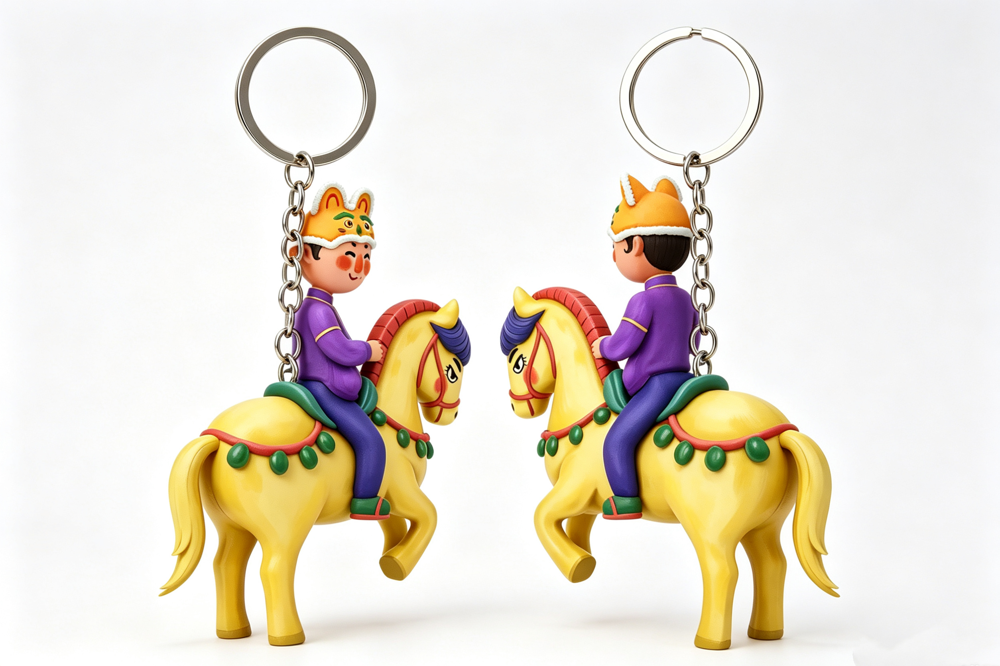
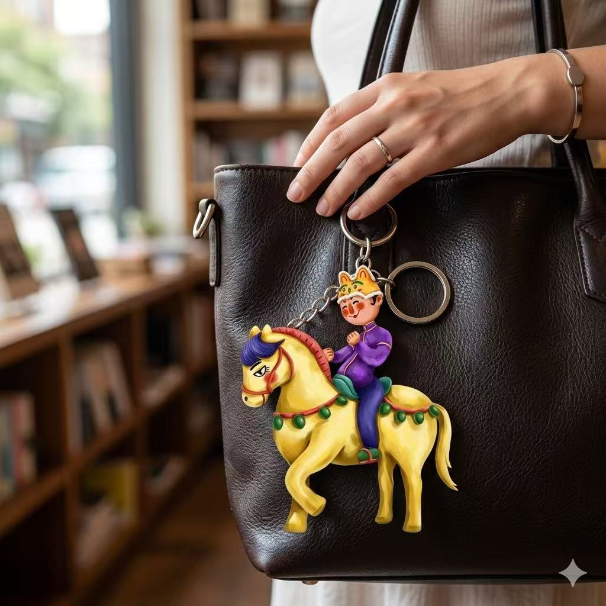
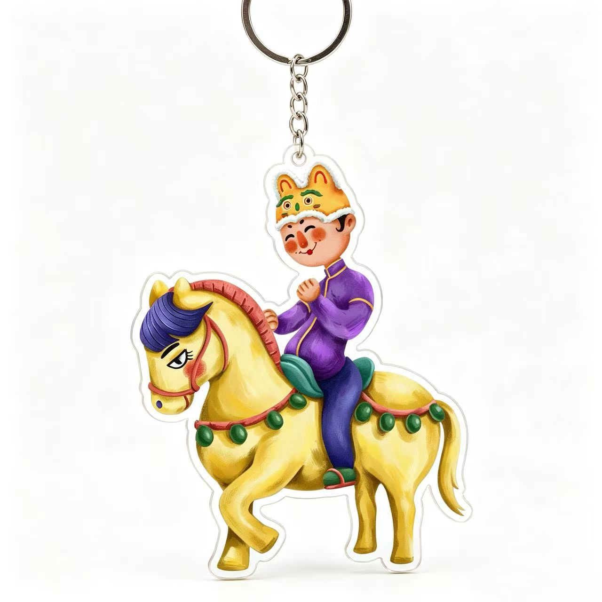
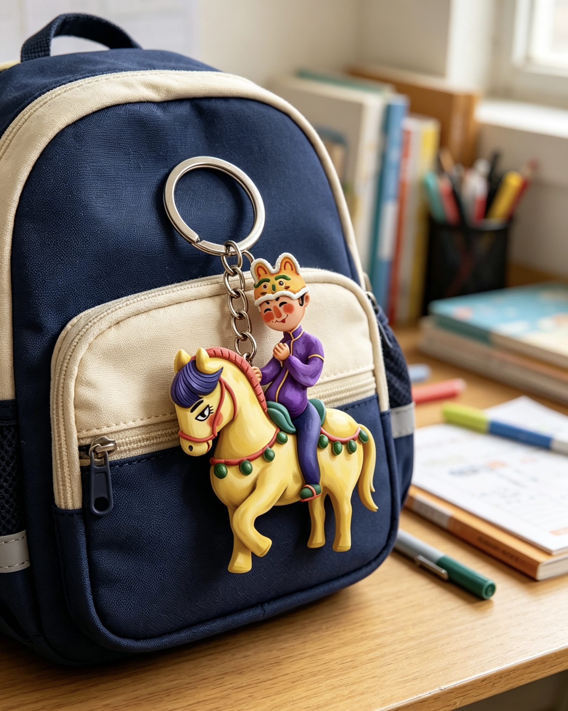
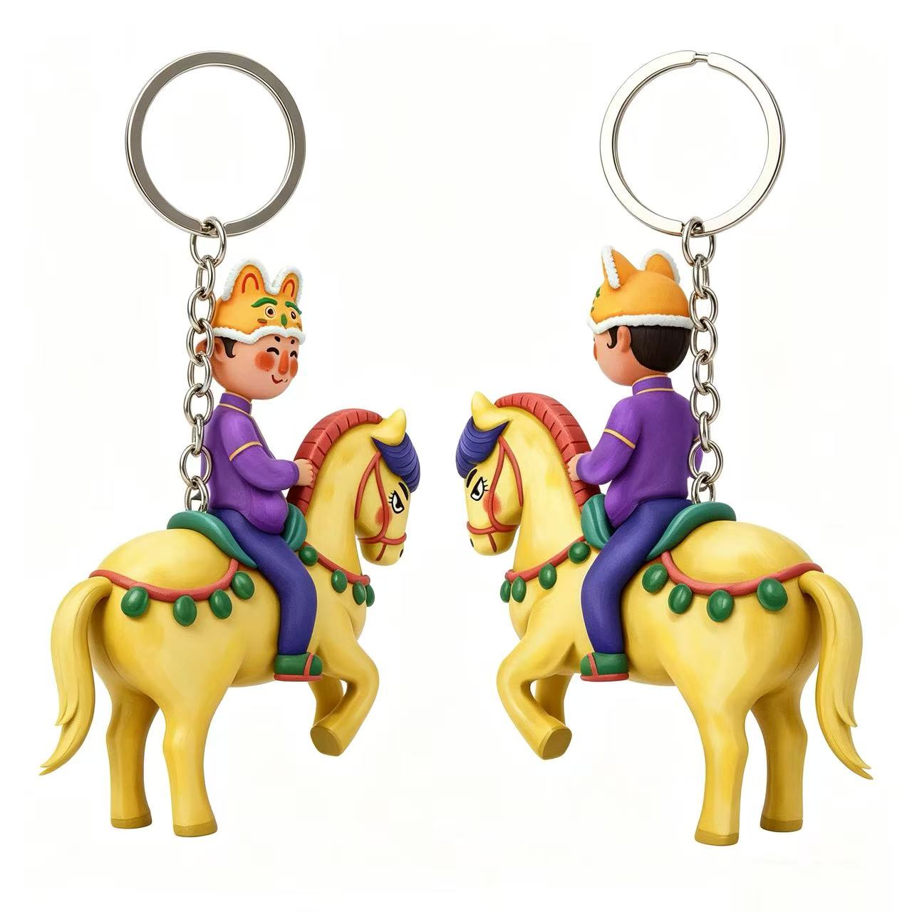
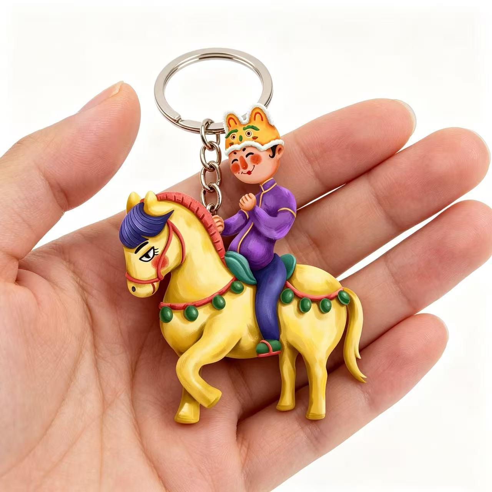
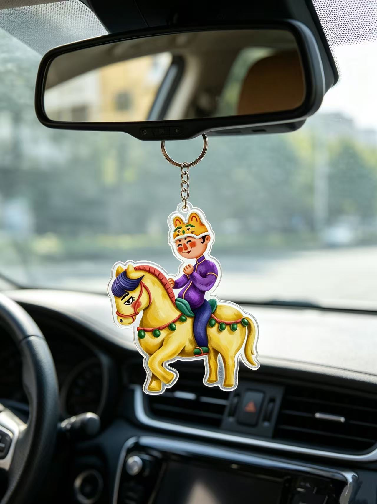

SCENE / BAG
挂在包上的小骑手
唐朝少年从展柜来到日常包袋上，像一枚带着笑意的出行护符。
KEYCHAIN / TANG RIDER
创作灵感来自陕西历史博物馆里的陕西唐朝陶俑。那位骑在马背上的少年，带着唐代俑塑里明快、松弛、天真的神情，从博物馆展柜走到今天的钥匙、书包和日常出行中。

FROM MUSEUM TO POCKET
百里把陶俑的马背姿态、少年笑意和唐代色彩重新整理成轻巧的钥匙扣。它像一枚小小的历史通行证，也像一个会陪你出门的古代朋友。
¥59 返回衍生艺术品购买SCENE / BAG
唐朝少年从展柜来到日常包袋上，像一枚带着笑意的出行护符。

OBJECT / FRONT
少年、黄马和虎头帽被做成明亮的图形，保留陶俑的童趣，也更适合随身携带。

SCENE / BACKPACK
挂在书包上时，它像一个从历史课本里跳出来的小角色，轻快又亲近。

SCALE / HAND
小巧但有存在感，适合钥匙、包袋、车内挂件或日常收藏。

OBJECT / TWO SIDES
从前后两个方向看见马背少年的轮廓和动态，让小物件也有立体的观看趣味。

DETAIL / PROFILE
马的步伐、少年的坐姿和链条比例共同组成轻盈的节奏感。

SCENE / CAR
挂在车内时，黄马与少年在光线里摇晃，给路途添一点来自唐朝的俏皮。